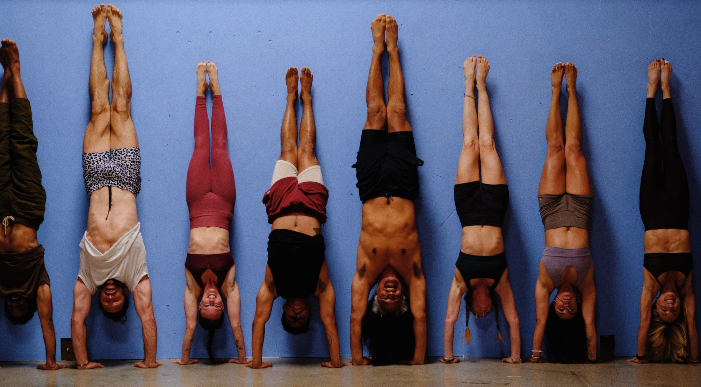
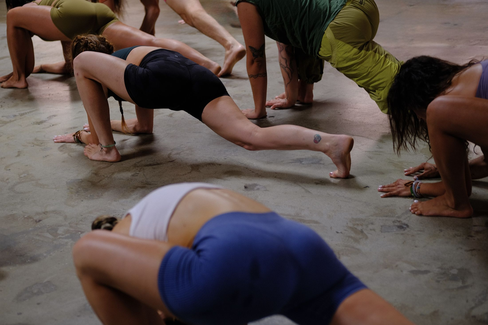
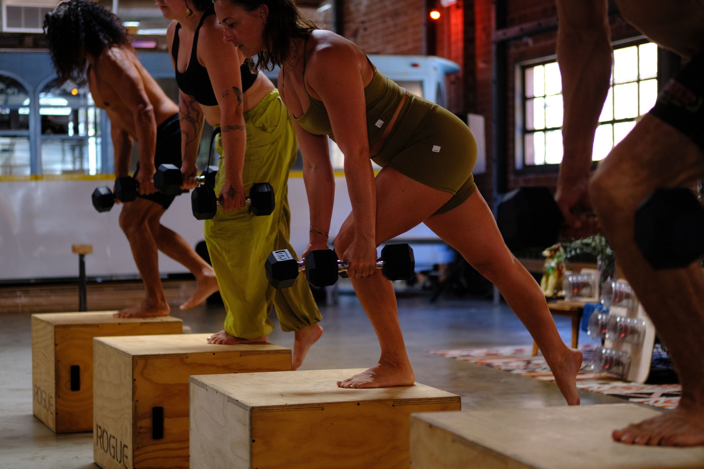
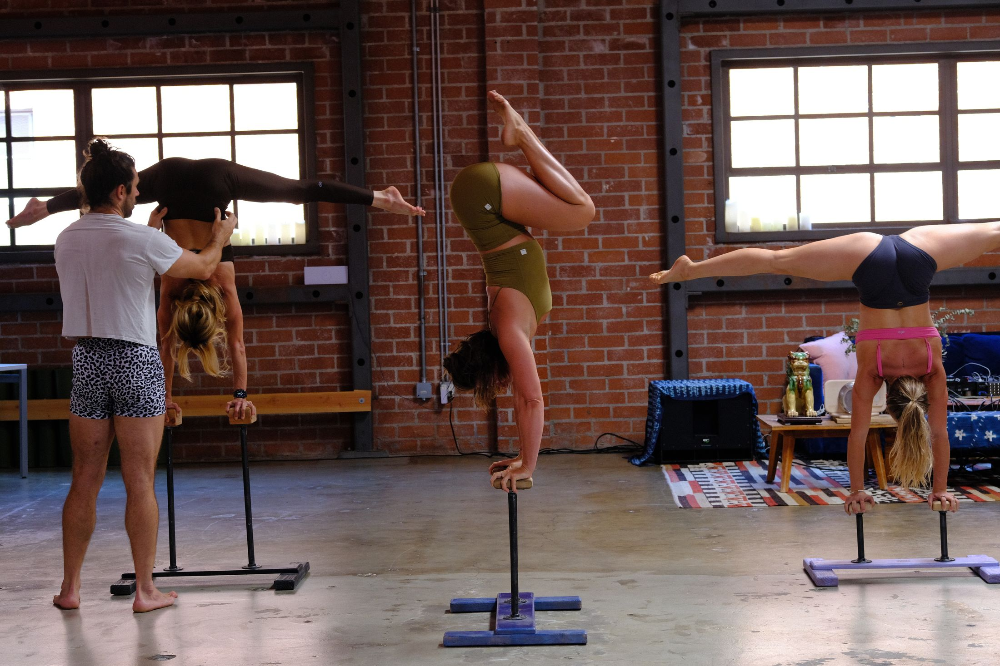
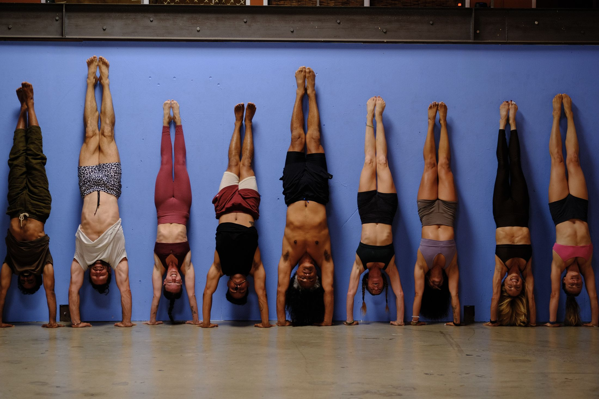

A systematized movement method built on bipedal and quadrupedal flows.
The primary focus of Primal Moves™ centers on developing stability, strength, mobility, and muscle tone using quadrupedal movements and dynamic maneuvers that mirror animal locomotion.
The practice improves efficiency in crawling, walking, running, jumping, and climbing through varied combinations and intensities, building coordination, balance, and functional capacity.
Emphasis on developing core strength targeting the abdomen, back, hips, and pelvis to improve posture, prevent injury, and enhance athletic performance.
The practice cultivates deeper body connection and awareness by focusing on movement patterns, sensations, and alignment to enhance proprioception and movement control.
Incorporating crawling, rolling, squatting, and primal movements reconnects individuals with innate movement abilities and overall physical fitness.

A functional bodyweight strength practice designed to balance anterior and posterior chains through push–pull movements.

Progressive strength and mobility practice that expands movement capacity while developing structural balance and joint stability in the spine, shoulders, hips, and hands.

An intermediate practice focused on skill development, refining transitions from dynamic to static holds and increasing comfort with hand-supported movements.

Focuses on skill refinement, complex movement sequences, and dynamic inversions requiring a solid foundation.
Primal Moves™ is a systematized movement method using bipedal and quadrupedal movement flows that trains a foundational base. Multi-joint, multi-planar closed kinetic chain movements develop stability, strength, and mobility with excellent muscle tone. The progressive 4-series system promotes longevity by loading joints equally. Sessions occur primarily in group formats, fostering community and social engagement.
Primal Moves™ is accessible to all seeking strength, fitness, mobility, and well-being. Unlike some systems, it avoids advanced gymnastics moves like planche, front and back levers, and flags that lack long-term functional benefit.
Quadrupedal movement trains motor coordination and physical cognition as all four limbs work simultaneously. The quadruped loads all joints equally across multiple planes without impact, releasing tissue stiffness and joint immobility. Physical imbalances are addressed as the body achieves structural equilibrium. Improvements in cardiovascular fitness, flexibility, muscular strength, endurance, and body composition naturally result.
Classes work through fundamentals, restoring posture, conditioning the body, stabilizing joints, and preparing hands, wrists, and shoulders for progressive inversions. Floor-based flow sessions use dynamic movements to gently open myofascial networks.
All movement increases physical longevity by maintaining muscle and bone mass. Motor coordination and cognition, central to bodyweight movement, are scientifically important factors.
Join entry-level classes offering full body awareness and strong foundation building in a fun, dynamic community environment.
Yes. Primal Moves™ isn’t specific handstand training; it incorporates handstand methods to develop body awareness and posture.
Quadrupedal bodywork has existed for decades, used by gymnasts and circus performers. Primal Moves™ was created in Ibiza in 2016.
Nick Brewer, the founder, developed the sequence after decades of movement training. He created an accessible yet physically challenging system fusing various movement modalities into a structured, safe format.
Yes - characteristics appear in gymnastics, pilates, and yoga, but Primal Moves™ offers a unique structured, complete method.
All share bodyweight training concepts promoting conscious awareness. Primal Moves™ distinguishes itself as a structured, systematized method with a tiered progressive system.
Although founder Nick Brewer studied yoga for 20 years, Primal Moves™ doesn’t follow traditional mat-based asana practice. He found yoga incomplete as a functional movement practice, though some modern asana postures appear.
One hour a day, five days a week. That is genuinely all it takes to find out what your body is capable of. Or come for a single $40 day first - nobody minds which.
Every class, the sauna, the cold plunge, for fourteen days. Long enough to stop thinking of it as a trial and start thinking of it as your week.
Not a single drop-in. A proper run at it.
start two weeks →Live-streamed classes and the full recorded library. Learn the practice from wherever you are, then come find us on the floor when you’re in town.
start free →